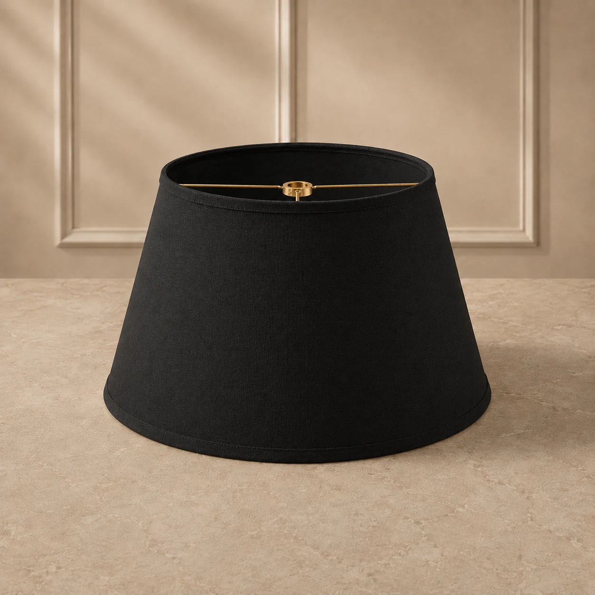

Clássicas e versáteis
Cúpulas cônicas com proporções pensadas para o seu projeto.
Do abajur de mesa às composições decorativas, o formato cônico valoriza a diferença entre as aberturas superior e inferior. Escolha um ponto de partida e personalize com a fábrica.
Peças sob encomenda · Custo da embalagem incluído no preço das cúpulas · Frete consultado no carrinho, quando disponível

Os detalhes importam
Seu projeto, com escolhas mais claras.
Uma cúpula proporcional ao seu abajur começa pelas medidas corretas.
Entenda como funciona a encomenda- 01
Linha elegante
O formato com base inferior mais ampla cria uma silhueta clássica e fácil de combinar.
- 02
Medidas personalizáveis
Informe abertura superior, inferior e altura em centímetros para uma avaliação mais precisa.
- 03
Tecido e acabamento
Escolha entre as opções apresentadas no configurador e confirme o acabamento da encomenda.
Catálogo Center Cúpulas
Explore cores e acabamentos
Imagens de referência do catálogo. Materiais, cores e estruturas devem ser confirmados na encomenda.


Antes de confirmar
Um orçamento melhor começa pelas informações certas.
Tenha as medidas em centímetros, a quantidade, o material desejado e, quando possível, uma foto da luminária ou do encaixe. Nossa equipe confere as especificações, a viabilidade e o prazo.
Perguntas frequentes
O que saber antes de encomendar
Quais medidas são necessárias?
Use o diâmetro superior, o diâmetro inferior e a altura da cúpula, em centímetros. Confira também o encaixe da luminária.
Posso trocar o tecido ou a cor?
O configurador mostra materiais e cores disponíveis para solicitação. A equipe confirma a disponibilidade e eventuais particularidades do acabamento.
Posso encomendar várias unidades?
Sim. Informe a quantidade no configurador; pedidos maiores podem exigir validação técnica, comercial e de prazo.
Explore também